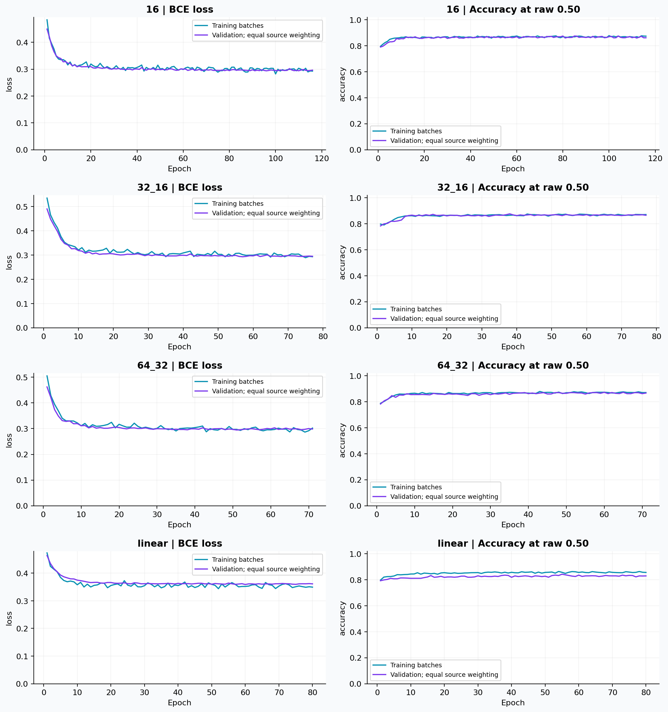
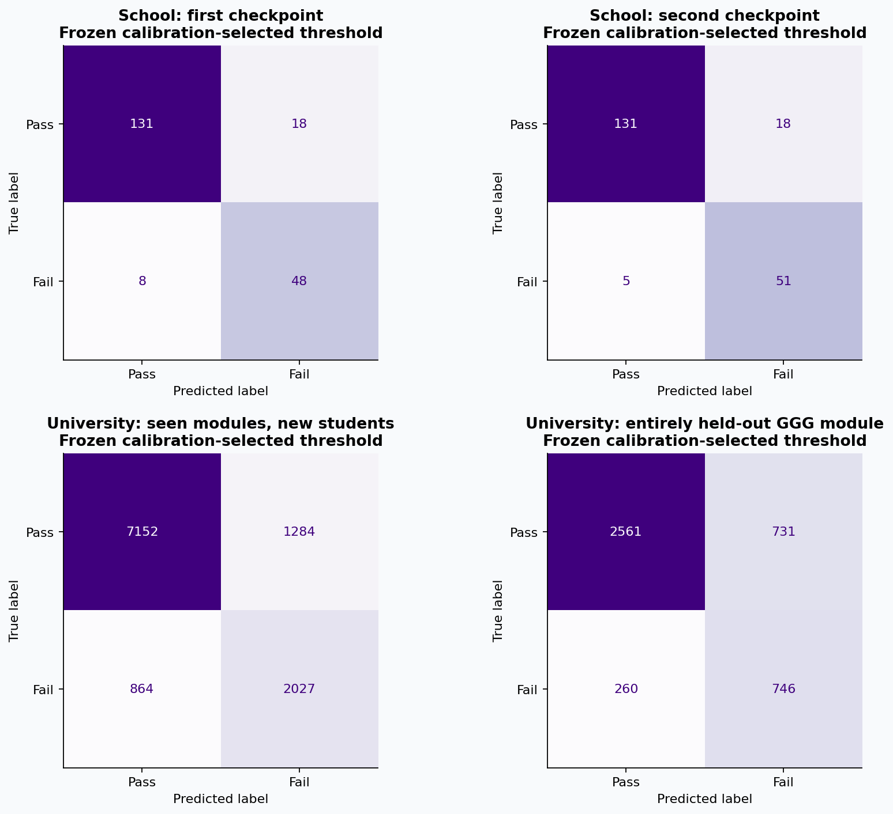
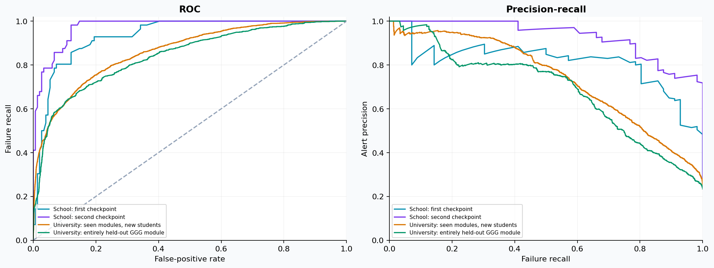
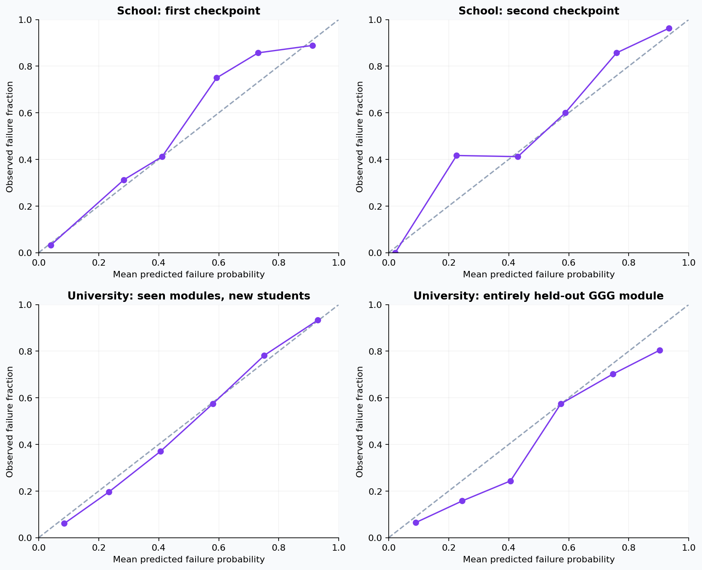
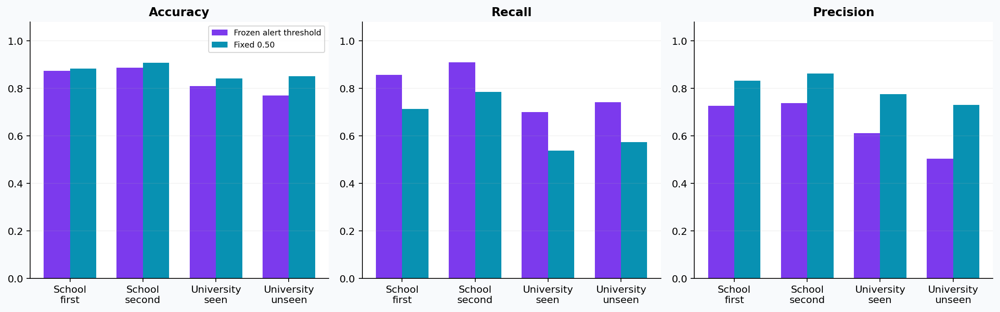

ONE PYTORCH MODEL · ANY COURSE DISPLAY NAME
Course failure risk from observed grades
Shared model: course_risk.pt. Hidden layers: [32, 16]. Frozen alert threshold: 0.320.
Inputs are numerical grade history, grading policy, course progress, available assignment information, and optional study context. Subject name is not a model feature.
Evaluation by population and prediction point
| Evaluation set | Accuracy | Precision | Recall | F1 | ROC-AUC | Average precision | Log loss ↓ | Records |
|---|---|---|---|---|---|---|---|---|
| School: first checkpoint | 0.873 | 0.727 | 0.857 | 0.787 | 0.934 | 0.818 | 0.290 | 205 |
| School: second checkpoint | 0.888 | 0.739 | 0.911 | 0.816 | 0.973 | 0.931 | 0.190 | 205 |
| University: seen modules, new students | 0.810 | 0.612 | 0.701 | 0.654 | 0.862 | 0.738 | 0.379 | 11327 |
| University: entirely held-out GGG module | 0.769 | 0.505 | 0.742 | 0.601 | 0.841 | 0.684 | 0.399 | 4298 |
Fail is the positive class. School checkpoints and university assessments have different timing and outcome policies. Later-checkpoint accuracy is not an early-warning accuracy claim. Student groups never cross training, validation, calibration, and test partitions.
Training and validation

Failures detected and false alerts

Ranking performance

Probability reliability

Alert-threshold tradeoff

Validation examples
Examples were involved in architecture selection; they are not independent test observations.
| group | source | subject | course_record | checkpoint | target | split | probability | predicted_fail |
|---|---|---|---|---|---|---|---|---|
| school:387e7ce0bcfd271839ea4dfd | school | Mathematics | student-mat.csv:4 | first | 0 | validation | 0.827 | True |
| school:387e7ce0bcfd271839ea4dfd | school | Mathematics | student-mat.csv:4 | second | 0 | validation | 0.282 | False |
| school:e98843ff7774681968717936 | school | Mathematics | student-mat.csv:9 | first | 0 | validation | 0.002 | False |
| school:e98843ff7774681968717936 | school | Mathematics | student-mat.csv:9 | second | 0 | validation | 0.000 | False |
| school:771f2de97933bf83646da572 | school | Mathematics | student-mat.csv:63 | first | 1 | validation | 0.209 | False |
| school:771f2de97933bf83646da572 | school | Mathematics | student-mat.csv:63 | second | 1 | validation | 0.539 | True |
| school:8e42b0da714d2ac5151344c7 | school | Mathematics | student-mat.csv:99 | first | 1 | validation | 0.760 | True |
| school:8e42b0da714d2ac5151344c7 | school | Mathematics | student-mat.csv:99 | second | 1 | validation | 0.586 | True |
| oulad:11391 | oulad | AAA | AAA:2013J:11391 | 0.25 | 0 | validation | 0.135 | False |
| oulad:11391 | oulad | AAA | AAA:2013J:11391 | 0.50 | 0 | validation | 0.101 | False |
| oulad:11391 | oulad | AAA | AAA:2013J:11391 | 0.75 | 0 | validation | 0.070 | False |
| oulad:52130 | oulad | AAA | AAA:2013J:52130 | 0.25 | 0 | validation | 0.295 | False |
| oulad:146188 | oulad | AAA | AAA:2013J:146188 | 0.25 | 1 | validation | 0.485 | True |
| oulad:146188 | oulad | AAA | AAA:2013J:146188 | 0.50 | 1 | validation | 0.416 | True |
| oulad:146188 | oulad | AAA | AAA:2013J:146188 | 0.75 | 1 | validation | 0.507 | True |
| oulad:564450 | oulad | AAA | AAA:2013J:564450 | 0.25 | 1 | validation | 0.389 | True |
Scope of the evidence
- School source: historical Mathematics and Portuguese records, with conservative identity grouping. Previously inspected UCI data are development evidence.
- OULAD source: Fail versus Pass/Distinction among graded university course completers. Withdrawal is excluded. All observations from students in module GGG were reserved; that module was absent from model selection and calibration.
- OULAD has submission dates but lacks actual score-release dates. A 14-day release lag is assumed. Final examinations and banked scores are excluded. UCI uses coarse grading-period progress proxies.
- Any subject name can be supplied to the Python interface. Accuracy on a new subject, school, grading policy, or population remains unverified until tested there.
- Absence counts and extracurricular hours do not influence the model. Study bands and participation flags are represented only in the school training data. Recommendations are transparent observations, not estimated causal effects.
- Cluster bootstrap intervals account for repeated student records, but not every source of training and model-selection uncertainty.
Data: UCI Student Performance and OULAD, both CC BY 4.0. Halabja annual data were downloaded and audited but excluded from training.
Full metrics · Metrics CSV · Model card · Validation examples · Training log